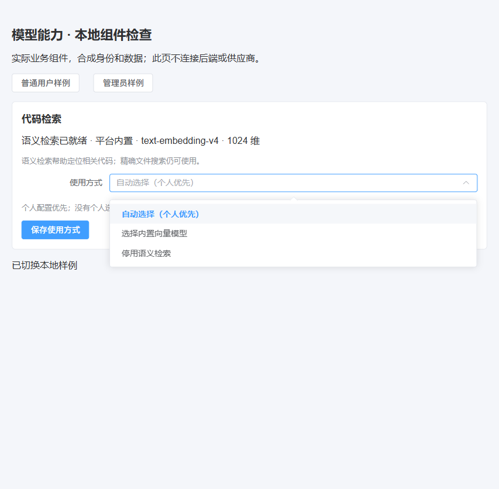
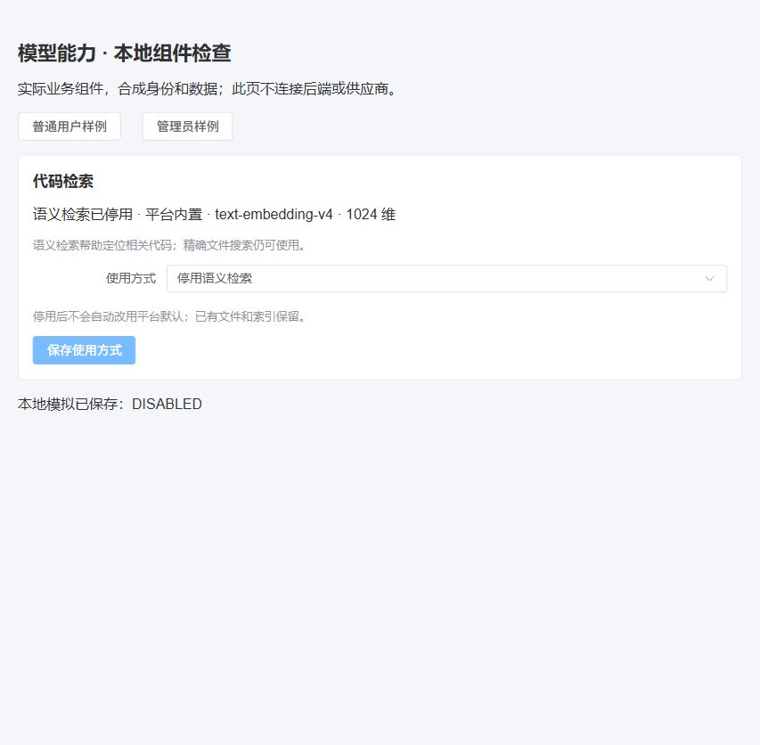
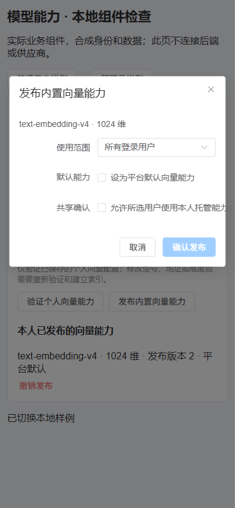
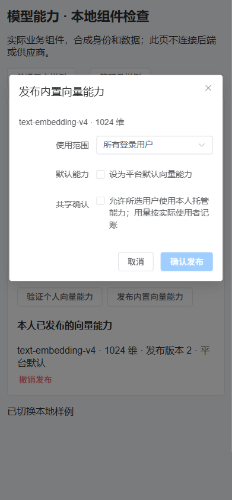

PaiCLI 模型能力接入 · 本地技术检查
日期：2026-10-04 · 代码实现与技术检查结果 · 唯一实施记录 · 机器结果及产物哈希
本地代码已实现、测试与构建已通过。浏览器展示实际业务组件，使用合成身份和模拟API；供应商测试使用本机MockWebServer，中心事务使用H2。此报告不表示真实模型已接通、能力已发布或用户业务已接受。
实现结果
- Responses传递真实图片字节，图片验证与文字证明分开；有效历史图片也要求图片能力。
- 向量按型号、规范化地址、维度与分块版本校验身份；旧索引须重建，取消或替换失败保留旧索引，精确搜索继续。
- 平台主模型与向量发布分开，受众与固定定义版本受控，凭据归来源用户、用量归实际使用者。
- 普通用户选择内置能力或停用；高级管理区域提供自配、验证、受众与共享发布。新操作复用若依权限和原任务反馈。
- 用量异常按未知处理，保留合法较大计数，不把向量失败算成零费用。
技术结果
| 模块 | 用例 | 失败/错误 | 跳过 | 结论 |
|---|---|---|---|---|
| paicli-api | 174 | 0 | 0 | 本地测试通过 |
| paicli-core | 102 | 0 | 0 | 本地测试通过 |
| paicli-runner | 24 | 0 | 0 | 本地测试通过 |
| 前端完整组件 | 177，28文件 | 0 | 0 | 通过；最末权限分离另23项定向复验，不重复相加 |
| 类型与生产构建 | 3237模块转换 | 0 | — | 通过；最新窄屏修复已构建 |
| 公共契约 | 115操作者操作，31Runner操作 | 0 | — | 路由、Schema与引用通过 |
核心最新计量增量已定向重新package；未受影响的图片协议检查沿用同轮通过结果。构建产物已生成，未替换真实运行通道。独立智能体已复核配置标识、跨层指纹、目录回执、取消提交、旧宿主兼容、历史图片门控、选择权限以及计量异常边界。
浏览器组件检查
| 普通顺序 | 操作与预期 | 实际结果 | 范围 |
|---|---|---|---|
| 1 | 普通用户展开使用方式，只见自动、内置和停用 | 通过；看不到个人配置或管理验证/发布 | 实际组件，合成会话写权限 |
| 2 | 选择停用并保存，收到停用状态和明确反馈 | 通过；模拟选择payload为DISABLED，未调用付费接口 | 模拟选择API；不证明真实数据库保存 |
| 3 | 管理员打开发布，共享未确认时禁止提交；确认后传当前定义、受众与行CAS | 通过；模拟发布包含EMBEDDING、1024维、版本2、行CAS4和confirmSharing=true | 模拟发布API；未进行真实共享 |
| 4 | 390像素窄屏共享说明完整可读 | 首次截断；已限定此弹窗换行样式，复验通过 | 原失败截图及修复截图均保留；复验无横向溢出 |




打包产物
| 本地路径 | 字节 | SHA-256 |
|---|---|---|
| ruoyi-backend/ruoyi-paicli/paicli-api/target/paicli-api-3.9.2.jar | 532973 | 7d42903071a0f7eef6843c3cab4feb1b628ae537ed6b303702a0885772005a26 |
| ruoyi-backend/ruoyi-paicli/paicli-runner/target/paicli-runner-3.9.2.jar | 274589 | 7925faab42335d01cc6f6cd841162518af86078a5ec65d53c894b7cfaf59acaf |
| ruoyi-backend/ruoyi-paicli/paicli-cli/target/paicli-cli-3.9.2.jar | 39829975 | 00422a55ca7f3765f77e6dfe9992626a4c7b9bd855037b5b531eae742ce4405e |
| frontend/admin-web/dist/index.html | 5422 | b956ea0d88a26a221315c1a07d0662ff187ccf5b7555141960d95d9966344041 |
尚未执行的真实链路
真实Sub2API HTTPS入口、PaiCLI托管用途和默认精确型号尚须核对；本轮未读取完整Key、未发付费请求、未写真实业务库或发布受众能力。默认型号的文字、工具、图片证明和阿里云实际项目检索效果仍需按明确网络与费用范围检查，不能沿用其他型号或PaiSmart直连结论。中心/Runner/CLI及管理端真实通道版本尚未切换，真实终端联机和用户业务接受未执行。